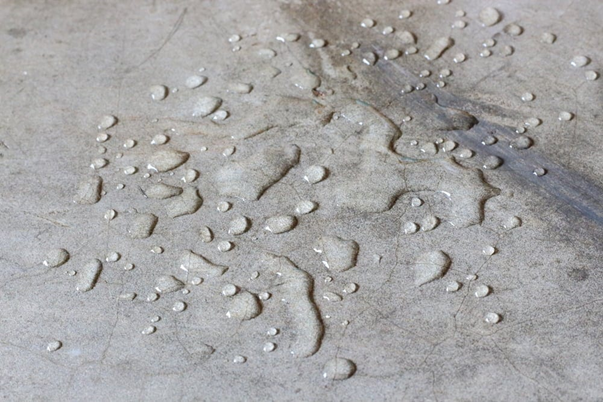

آبگریز کننده های نما، پایه های شیمیایی و عملکرد
آبگریز کننده های نما، پایه های شیمیایی و عملکرد
سیلان ها:
Alkyltrialkoxysilanes ها از یك گروه Alkyl تشکیل شده اند كه به عنوان یك ماده دافع آب و سه گروه alkoxy برای واکنش پذیری و پیوند شیمیایی شیمیایی (با سیلیس موجود در مصالح بستر واکنش می دهند)، همه به یك اتم سیلیكون ملحق شده اند.
از آنجا که alkyltrialkoxysilanes برخی از کوچکترین ترکیبات مبتنی بر سیلیکون هستند، تمایل دارند که بهتر از سیلوکسان های بزرگتر یا رزین های سیلیکون (polydimethylsiloxanes) به داخل بستر نفوذ کنند.
در هنگام استفاده روی بسترهای متراکم مانند بتن آرمه با کیفیت این مزیت است ولی برای بستر متخلخل مانند بتن سبک و آجرهای نسوز می تواند یک ضرر باشد.

سیلوکسان ها:
سیلوکسان ها در اصل الیگومرها یا زنجیره های کوتاه سیلان هستند، هرچند از سیلان ها ساخته نمی شوند.
سیلوکسان ها بزرگتر از سیلان ها هستند و توانایی دستیابی به عمق نفوذی که سیلان ها را ندارند. سیلوکسان ها برای سطوح متخلخل تر عملکرد مناسب تری دارند.
رزین های سیلیکون (polydimethylsiloxanes):
رزین های سیلیکونی در تماس با رطوبت به شکل یک فیلم الاستومری تبدیل می گردند. ترکیبات رزین های سیلیکونی از نظر سایز از سیلان ها و سیلوکسان ها خیلی بزرگتر هستند. به دلیل اندازه بزرگ و واکنش پایین رزین های سیلیکونی، وقتی آنها با سیلانها ترکیب می گردند عملکرد بسیار خوبی دارند و یک فیلم پایدار و کاملا آبگریز تشکیل می دهند.
سیلیکونات ها:
متیل سیلیکونات ها نمک های محلول در آب متیل سیلان ها هستند و به صورت شیمیایی با سیلیس موجود در مواد بستر از طریق واکنش با دی اکسید کربن پیوند میخورند. پیوند به بستر در مقایسه با سایر آبگریزهای واکنشی به دلیل کمبود دی اکسید کربن موجود در جو، به آرامی اتفاق میافتد. این واکنش در محیط های قلیایی مانند بتن یا ملات سیمانی به شدت آهسته میشود. به همین دلیل، سیلیکونها به عنوان سیلرهای بسترهای بتنی توصیه نمی شوند ولی برای آجرهای نسوز مناسب می باشند.
عملکرد:
سیلان ها و سیلوکسان ها به طور شیمیایی با مواد سیلیسی پیوند می خورند و یک هیدروکربن آبگریز ، گروه آلکیل را مستقیماً به بستر می چسبانند. وجود این گروه آلکیل باعث کاهش تنش سطحی بستر تا حدی می شود که در زیر سطح فشار آب قرار دارد. هنگامی که این اتفاق می افتد، آب نمی تواند بستر را خیس کند و در صورت عدم وجود فشار هیدرواستاتیک مداوم ، وارد سنگ یا بتن نمی شود. این مواد هیچ گونه محافظتی در برابر فشار هیدرواستاتیک ارائه نمی دهند ولی برای نمبند کردن سطوح بدون فشار هیدرواستاتیک بسیار عملکرد خوبی دارند.
مزایا:
· جلوگیری از نفوذ انواع یون های خورنده مانند کلرید و سولفات
· اجازه به تنفس سطح زیر کار
· عدم تشکیل لایه و نفوذ به داخل سطح
· عمق نفوذ مناسب در لایه سطحی مصالح
· عدم تغییر در رنگ و ظاهر مصالح
· راحتی استفاده و کاهش هزینه ها
· قابل شستشو و خودتمیز شونده با بارش باران
· ضد غبار، لک، جلبک و ...
· مقاوم در برابر اشعه UV نور خورشید
معایب:
· عدم تحمل فشار آب مداوم
· دوام متوسط روی سطح
محصولات مرتبط استرامیکس (شرکت بسپار بتن ایرانیان هوشمند):
Strutop SR12: عایق نما (محافظ رطوبتی نما) نانو سیلان – سیلوکسان آبگریز بر پایه حلال
Strutop WR7: عایق نما (محافظ رطوبتی نما) نانو سیلان – سیلوکسان آبگریز بر پایه آب
Strutop Cem260: عایق نانو نما آبگریز سیلان – سیلوکسان پایه آب با دوام بالا (مخصوص سطوح سیمانی)
بهترین مطالب هر ما
ارسال میشه به صندوق پستی شما!
این بالا کلیک کن و ایمیلت رو بنویس
ثبت